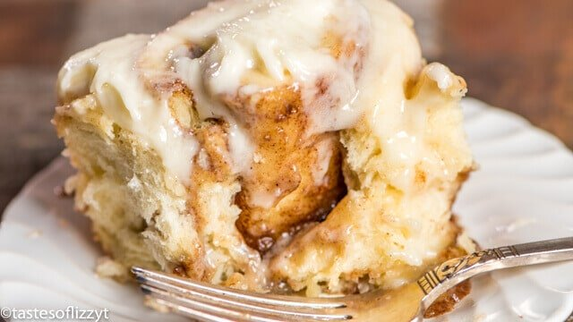

Cinnamon Rolls

Description
This cinnamon roll recipe makes classic, home-style cinnamon rolls. They’re fluffy, soft, and topped with vanilla glaze. It’s taken me some time to develop quick cinnamon rolls that maintain all the flavor of traditional overnight cinnamon rolls. I have the winner for you right here and I baked two batches just to be sure.
Do you love homemade cinnamon rolls, but are nervous to bake with yeast? Join the club. I was too! But this recipe changed everything for me. They’re perfect for anyone who wants to learn how to bake with yeast. Unlike cinnamon rolls that require hours of rise time, plus a 2nd rise time after the rolls are shaped, this easy cinnamon rolls recipe only requires 1 rise.
Ingredients
Rolls:
- 2 3/4 cups all-purpose flour
- 1/4 cup granulated sugar
- 1/2 tsp salt
- 2 1/4 tsp instant yeast
- 1/2 cup whole milk
- 1/4 cup water
- 3 tbsp unsalted butter
- 1 large egg
Filling:
- 3 tbsp unsalted butter
- 1 tbsp ground cinnamon
- 1/4 cup granulated sugar
Icing:
- 1 cup confectioners sugar
- 1/2 tsp pure vanilla extract
- 2-3 tbsp strong brewed coffee or milk
Steps
- Make the dough: Whisk the flour, sugar, salt, and yeast together in a large bowl. Set aside.
- Combine the milk, water, and butter together in a heatproof bowl. Microwave or use the stove and heat until the butter is melted and the mixture is warm to touch (about 110°F). Pour into the dry ingredients, add the egg, and stir until it forms a soft dough or use your mixer.
- On a lightly floured surface using floured hands, knead the dough for 3 minutes. Place in a lightly greased bowl (I use non-stick spray), cover loosely, and let rest for about 10 minutes.
- Fill the rolls: After 10 minutes, roll the dough out in a 14×8 inch rectangle. Spread the softened butter on top. Mix together the cinnamon and sugar. Sprinkle it all over the dough. Roll up the dough tightly to make a 14 inch log. Cut into 10-12 even rolls and arrange in a lightly greased 9-inch round cake pan or pie dish.
- Rise: Tightly cover the rolls with aluminum foil or plastic wrap and allow to rise in a warm, draft-free environment for 60-90 minutes. See blog post above for my trick to this step!
- Bake the rolls: After the rolls have doubled in size, preheat the oven to 375°F (190°C). Bake for 25-28 minutes until lightly browned. If you notice the tops are getting too brown too quickly, loosely cover the rolls with aluminum foil and continue baking.
- Make the icing: Whisk the confectioners’ sugar, vanilla extract, and coffee/milk together. Drizzle or spread over warm rolls.
- Cover leftover frosted or unfrosted rolls tightly and store for up to 3 days at room temperature or up to 5 days in the refrigerator.